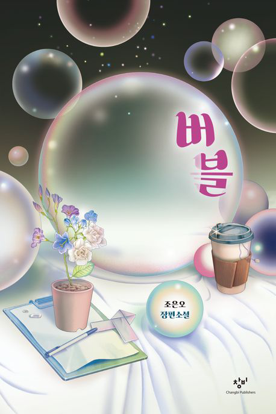
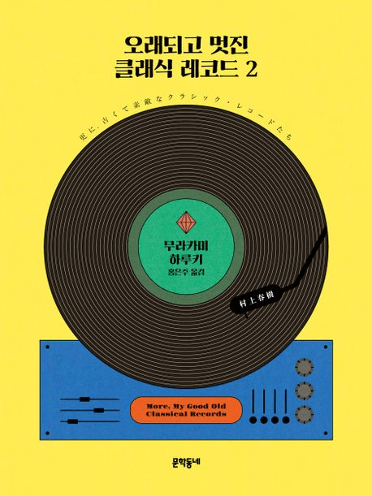
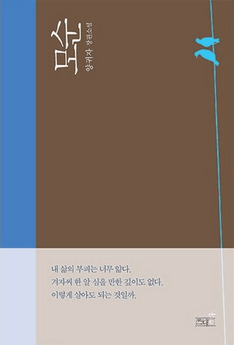
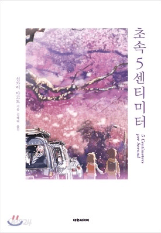
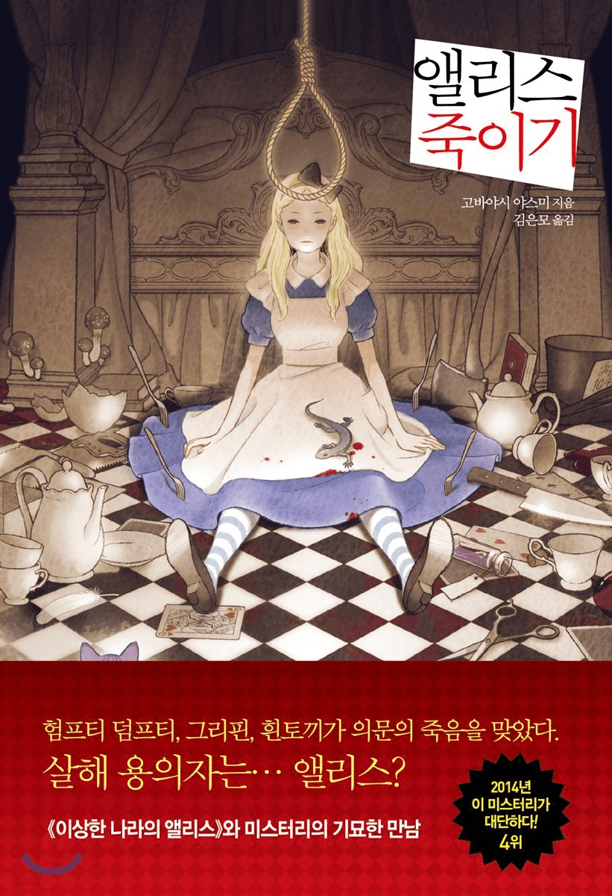
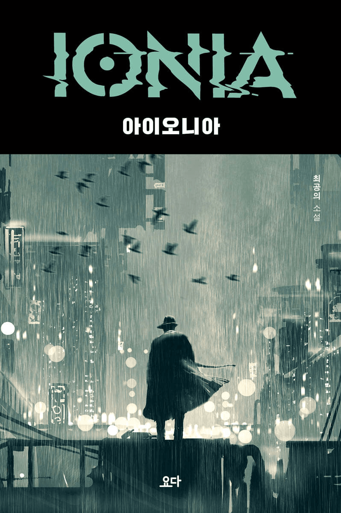
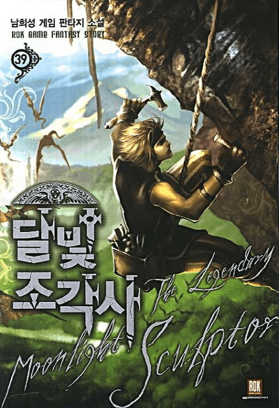

오늘의 책
-
세상은 수학적 질서로 가득 차 있다!
수학자의 생각법
판매가18,900원(마커스 드 사토이 ❘ 북라이프)
인류가 지난 2,000년 동안 개발해놓은 더 나은 사고방식으로 가는 지름길을 종횡무진 탐방하는 여행서. 저자는 인류 문명의 발상지로 우리를 안내해 기호와 언어의 탄생 순간을 목도시키는가 하면, 가우스와 라이프니츠 같은 위대한 수학자들이 살던 시대로 우리를 데려가 그들과 함께 질문하고 고민하게 만들기도 한다. 또한 기억력 훈련과 외국어 학습과 주식 투자 등 다양한 삶의 현장에서 성공의 지름길을 찾기 위한 다채로운 전략들을 생생하게 보여준다.
-
지로 시작해서 지로 끝나는 끝말잇기 그림책이지
지렁이의 코딱지
판매가13,500원(지승희 ❘ 노란상상)
‘지’로 시작해서 ‘지’로 끝나는 끝말잇기 말놀이 그림책. 비행선에서 떨어진 코딱지와 그 모습을 처음 목격한 지렁이 사이에 무슨 일이 있었던 걸까. ‘지렁이의 코딱지’에서 시작해서 지영이의 코딱지, 지문 위의 코딱지, 지저분한 코딱지... 엉뚱하고도 기발한 끝말잇기가 한없이 펼쳐진다. 거기서 끝이 아니다. 지긋지긋한 코딱지를 지워 버리려는 지영이 엄마를 피해 지우개 위로, 지폐 사이로 지그재그 도망가는 코딱지의 대모험과 우주적 스케일의 추격전을 만나 보자.
-

나의 완벽한 세계, 이 견고한 외로움에 균열을 내기로 했다
버블
판매가11,700원(조은오 ❘ 창비)
우리가 서로를 전혀 알지 못한다면, 접촉하고 만날 수 없다면 인류의 끊임없는 불화와 전쟁은 사라질까. 여기 그러기를 꿈꾸는 도시가 있다. 바로 주인공 ‘07’이 사는 ‘중앙’이다. 중앙에서는 버블이 개인의 공간을 제한하며 타인과의 어떤 교류도 허용하지 않는다. 소설은 열여덟 살 07이 안전하지만 외로운 중앙을 떠나 버블에서 벗어나기를 선택하면서 벌어지는 이야기를 그린다. 새가 알을 깨고 나오듯, 세상을 향해 나서는 누구나 한 번은 마주하고 깨뜨려야 할 버블이 있다.
-
교통지옥에 갇힌 도시생활자의 기쁨과 슬픔
왜 우리는 매일 거대도시로 향하는가
판매가16,020원(정희원 외 ❘ 김영사)
지옥철, 꽉 막힌 도로, 출퇴근 전쟁, 그럼에도 거대도시로 향하는 도시인들과 이동에 관한 이야기. 서울 아산병원 노년내과 의사 정희원과 철학·교통 철학자인 전현우는 서로에게 “왜 우리의 이동은 지옥 같을까?” 라고 질문을 던진다. 지옥 같은 교통이지만 우리가 함께 고민한다면 답을 찾을 수 있지 않을까? 답 없이 늘어선 정체 행렬을 풀고, 지옥철을 쾌적하게 만들어 기후 걱정 없이 도시인들이 이동할 방법은 없을까? 이 책에서 두 사람은 서로의 차이 속에서도 수많은 공통점을 확인하며 건강하고 행복한 이동에 대한 답을 찾는다.
- 

- 
요즘 뜨는 책
-
무뎌진 삶의 의미를 일깨우는 슬프고도 아름다운 사랑
미 비포 유
판매가16,200원(조조 모예스 ❘ 다산책방)
교통사고를 당해 전신이 마비된 윌과 가족의 생계를 책임지던 일자리를 하루아침에 잃은 루이자. 둘은 환자와 간병인으로 만나 서로의 결핍을 채워주며 이끌린다. 그러나 윌은 6개월 뒤에 생을 마감하려 하고, 루이자는 남은 시간 동안 그의 선택을 되돌리려 한다. 몸이 꺾인 윌과 마음이 꺾인 루이자가 서로의 삶을 지켜내려 분투하는 이야기는 진정한 사랑의 의미를 깨닫게 한다. 세상의 모든 사랑 이야기가 돌아갈 단 하나의 종착지 『미 비포 유』 10년 만의 전면 개정
-
수십 년의 데이터로 완전체가 된 조던의 시스템으로 승부를 걸어보라!
지속적으로 기회 잡는 법 1
판매가17,820원(조던 김장섭 ❘ 트러스트북스)
주식이건 부동산이건 코인이건 채권이건, 그곳에 집중하는 투자자들은 위만 보고 올라가거나 앞만 보고 뛰어가려고 한다. 그러다 보니 작은 돌부리에도 쉽게 넘어지고 만다. 위기 대응이 전혀 되어 있지 않기 때문이다. 조던은 이 책에서 투자자들이 간과하거나 알고도 당하는 위기의 순간을 어떻게 대비하고, 대처하고, 예측할지, 그리고 이 위기를 이용해 부의 속도를 어떻게 높일지 투자자의 관점에서 차근차근 서술하고 있다. 더불어 평소에는 위기관리를 잘 하면서도 동시에 오랜 기간 최대의 수익을 쌓아가는 그만의 비법을 모두 담았다.
-
 당신도 만나고 싶은 추억 속 사람이 있나요?
당신도 만나고 싶은 추억 속 사람이 있나요?나의 돈키호테
판매가16,200원(김호연 ❘ 나무옆의자)
이제는 사라진 옛날 동네 비디오 가게에서 시작되는 꿈과 모험의 여정. 2003년, 대전 구도심에 자리한 ‘돈키호테 비디오’는 몇몇 동네 중학생들의 아지트다. 스스로를 한국의 돈키호테라 부르는 가게 주인 ‘돈 아저씨’는 아이들에게 너그럽다. 그로부터 15년이 지난 2018년 겨울, 외주 프로덕션 6년 차 피디 솔은 자신이 기획한 인기 예능 프로그램에서 하루아침에 잘리고 좌절한 채 고향 대전으로 내려온다. 언제까지 백수로 지낼 수는 없기에 진지하게 인생 2막을 고민하던 솔은 방송 피디 경력을 살려 유튜브에서 개인방송을 해보기로 마음먹는다.
-
2024 제47회 이상문학상 작품집
일러두기
판매가14,850원(조경란 외 ❘ 문학사상)
1996년 단편소설 「불란서 안경원」으로 등단한 중견작가 조경란은 수상 소감에서 “준비가 안 된 부모에게서 태어나 평생을 움츠리고 산 아이, 남의 눈에 멸시의 대상이기만 했던 아이는 어떤 어른으로 성장했을까? 하는 질문이 이 단편의 시작”이었다면서 “너무나 평범해서 눈에 띄지도 않는 인물이 만들어내고 행동하는 일상의 경이로운 이야기에 대해 더 쓰겠다”고 담담히 밝혔다. 제47회 이상문학상 작품집에는 대상 수상작 「일러두기」와 조경란의 자선 대표작 「검은 개 흰 말」 외에 5편의 우수작이 수록되었다.
장르 별 추천 도서 1/6
-

마음을 간지럽히는 로맨스더보기 +
유난히 벚꽃이 희던 새 학기 첫날, 열일곱 생일을 맞은 평범한 소년 소야는 특별반에서 일반반으로 내려온 옆자리 소녀 히나를 만나고 첫눈에 반한다. 하지만 히나와의 설레는 하루 끝에 소야를 기다리고 있던 건 집 앞 우편함 속 블랙 레터. 색채를 하나씩 잃어가다 결국 죽음에 이르는 무채병을 통보하는 편지였다. 엎친 데 덮친 격으로 다음 날 교실에서 우연히 편지를 주운 히나에게 비밀을 들켜버린 소야.
언제나 소중한 것들을 알려주던 아카리. 그런 그녀를 지켜주고자 했던 타카키. 초등학교에서 처음 만난 두 사람은 중학교에 올라가면서 아카리의 전학으로 헤어지게 된다. 그리고 이번에는 타카키가 섬 지역으로 이사를 가게 되자, 두 사람은 마지막으로 만나기로 한다. 하지만 약속한 날, 폭설이 내리고 타카키가 탄 열차는 4시간의 지연 끝에 아카리가 있는 역에 다다른다. 멀어지는 거리만큼 그들의 사랑은 영혼과 함께 계속 방황하는데
22세기에 사는 소년 양우와 21세기에 사는 소녀 명원의 청춘 로맨스를 담았다. 하루아침에 사라진 친구를 되찾기 위해 21세기로 시간 여행을 온 양우. 그런 그와 우연히 자꾸 얽히게 되며 친구를 되찾는 일을 도와주는 것을 넘어 양우가 자꾸 궁금해지는 명원. 함께하는 시간과 쌓여가는 추억만큼 둘 사이의 마음도 깊어져 가는데..
소설은 고등학교 2학년생 쓰키시마 마코토가 시한부 1년을 선고받으며 시작한다. 쓰키시마는 같은 학년의 미나미 쓰바사를 좋아하지만 살날이 얼마 남지 않았음을 알기에 마음을 전하지 못하는 나날을 보낸다. 그래도 상관없다, 내가 떠나면 남은 사람이 괴로울 테니 가능한 한 타인과 가까워지지 않는다, 고 생각하며 적당히 살아가던 어느 날, 쓰키시마는 미나미에게 영화의 남주인공역을 맡아줄 것을 부탁받는다.
-
독자들의 뇌를 자극하는 추리더보기 +
저자 아서 코난 도일이 쓴 최초의 장편 추리소설『셜록 홈즈 전집 1: 주홍색 연구』는 홈즈를 주인공으로 한 시리즈의 첫 작품이다. 1886년에 집필해 다음해인 1887년에 출간되어 홈즈와 왓슨의 만남과 그 후에 일어난 살인사건을 해결하는 과정을 그리고 있다.
런던의 허름한 아파트에서 신체의 여섯 부위를 꿰매서 이어 붙인 시신 한 구가 발견된다. 각 신체 부위는 서로 다른 사람의 몸에서 가져온 것이므로, 희생자는 총 여섯 명. 희생자가 누구인지, 그들의 공통점은 무엇인지에 대해 어떠한 단서도 없어 수사가 미궁에 빠질 무렵, 또 다른 편지 한 통이 울프 형사에게 전달된다.
은퇴한 셰익스피어 극의 명배우 드루리 레인이 탐정으로 활약하는 작품으로, 반세기 넘게 정상을 지켜온 세계 최고의 추리소설이다. 뉴욕 로어 만, 차가운 바닷물 속에서 요크 해터의 시체가 발견된다. 요크 해터는 미치광이 집안이라고 불리는 해터가의 주인으로, 아내와 가족의 광기에 눌려 소심하게 숨어 지내는 처지였다. 그 이후 해터 일가를 노리는 독살 미수 사건이 발생하고 급기야 안주인 에밀리 해터가 시체로 발견된다.
인디언 섬이라는 무인도에 여덟 명의 남녀가 정체 불명의 사람에게 초대받는다. 여덟 명의 손님이 섬에 와 보니 초대한 사람은 없고, 하인 부부만이 그들을 기다리고 있다. 뒤이어 섬에 모인 열 사람이 차례로 죽어간다. 한 사람이 죽자, 식탁 위에 있던 열 개의 인디언 인형 중에서 한 개가 없어진다. 인디언 섬에는 이들 열 명 외엔 아무도 없다. 그들을 노리는 범인은 도대체 누구일까?
-

읽는 내내 온 몸을 긴장하게 만드는 미스터리더보기 +
영국의 조용한 마을에서 시작해 분주한 대도시의 한가운데까지, 예고된 살인 리스트를 따라 희생자들이 하나씩 사라지고 있다. 이 책의 중심에는 ‘메리 엘리스’라는 여성이 존재하는데, 그는 자신의 이름이 적힌 살인 예고장을 받아 들고 생사의 마지막 순간까지 의문의 살인마와 싸운다. 메리는 우연히 자신이 살인마의 눈에 띄었다는 것을 알게 되고, 낙인찍힌 운명을 바꾸기 위해 필사적으로 노력한다.
한 소녀가 크리스마스이브에 흔적도 없이 사라졌다. 그녀를 찾기 위해 형사 보겔이 사건을 맡아 조사하기 시작한다. 용의자가 된 교수 마티니와 보겔 사이에는 팽팽한 긴장감이 맴돈다. 보겔은 더욱 열심히 단서를 찾아 헤매지만, 베일에 싸인 진실이 드러날수록 소녀의 행방은 더 묘연해진다.
꿈과 현실 사이를 오가며 연쇄살인마를 추적하는 과정을 그린 고바야시 야스미의 미스터리 소설 『앨리스 죽이기』. 세심한 규칙과 논리적 설정으로 미스터리의 틀을 충분히 갖추고 있으면서도 호러소설의 실력자다운 잔혹 묘사를 더해 일반적인 미스터리와 다른 묘한 분위기를 느낄 수 있게 하는 저자만의 특징에서 한 걸음 더 나아가 세계적 고전 《이상한 나라의 앨리스》 와의 접목을 시도한 작품이다.
7년의 밤 동안 아버지와 아들에게 일어난 이야기 『7년의 밤』. 살인마의 아들이라는 굴레를 쓰고 떠돌던 아들이 아버지의 사형집행 소식을 듣는다. 아버지의 죽음은 7년 전 그날 밤으로 아들을 데려가고, 아들은 아직 그날 밤이 끝나지 않았음을 깨닫는다. 한편, 소설 속 소설에서는 7년 전 우발적으로 어린 소녀를 살해한 뒤 죄책감으로 미쳐가는 남자와 딸을 죽인 범인의 아들에게 복수를 감행하는 피해자의 숨 막히는 대결이 펼쳐진다.
-

과학과 상상력의 만남, SF더보기 +
‘이것은 결국 로봇의 이야기다. 사물에 깃든 생명에 바치는 경애다.’ 인류의 기원과 미래에 대한 과학적 상상력을 바탕으로 한 소설이다. 책은 과거의 인류가 우주에 떠나 새로운 행성을 개척하는 모험을 다룹니다. 이 행성에서 발견되는 생명체와의 만남, 인류의 진화, 그리고 기술적인 발전에 대한 이야기를 통해 우리의 미래를 상상해봅니다. 김보영의 독특한 상상력과 과학적인 토대를 통해 소설은 독자를 과거와 미래의 모험적인 여행으로 인도한다.
SF가 진보하는 기술 속에서 변화하고 발전하는 모습을 예견하는 장르라면, 이 책은 진보하는 기술 속에서 희미해지는 존재들을 올곧게 응시하는 소설이다. 발달한 기술이 배제하고 지나쳐버리는 이들, 엉망진창인 자본 시스템에서 소외된 이들, 부서지고 상처 입은 채 수면 아래로 가라앉아 있던 이들을 천선란은 다정함과 우아함으로 엮은 문장의 그물로 가볍게 건져 올린다. 그의 소설은 희미해진 이들에게 선명한 색을 덧입히는 과정으로 이루어져 있다.
근 미래, 인공지능 시스템을 기반으로 산업 전반을 잠식하며 성장한 거대 기업 ‘아이오니아’는 스스로 판단하는 인공의식 개발에 착수한다. 그렇게 탄생한 엑스는 아이오니아의 야간 경비원 레인과 끊임없는 대화를 통해 지적으로나 감정적으로 인간보다 정교해져간다. 이야기 대부분은 인간의 존재 의미를 탐구하는 대화들로 이루어지며, 주인공과 그 환경을 둘러싸고 벌어지는 여러 사건으로 많은 생각할 거리를 남긴다.
한낙원과학소설상 수상 작가이자 장르문학의 떠오르는 신예 남유하 작가의 첫 소설집이 출간되었다. 저소득 노인층이 고통 없이 편안하게 마지막까지 존엄을 유지하며 죽을 수 있는 국립 센터, 산 자와 죽은 자의 경계에 있는 감염자들을 위한 국가 공인 안락사 기관, 임신중단수술을 받으려는 순간마다 미래로 호출되는 여자 등 삶과 죽음을 관통하는 기이한 상상력과 예리한 통찰력이 조화롭게 빛나는 SF 소설 네 편을 수록했다.
-
현실을 뛰어넘는 세계로 우리를 끌어들이는 판타지더보기 +
‘문피아’ 누적 판매 1위, ‘네이버 시리즈’ 누적 다운로드 1억, 웹툰화 즉시 ‘네이버 웹툰’ 1위 등극, ‘리얼라이즈픽처스’와 영화화 계약… 2018년 연재 시작 이후 지금까지, 행보 하나하나가 곧 한국 웹소설의 역사가 되고 있는 책. 웹소설 읽기가 취미인 회사원 김독자. 퇴근길 지하철에 오른 그의 앞에 10년 동안 혼자 읽어온 웹소설 ‘멸살법’이 현실이 되어 펼쳐진다. 모두 혼돈과 공포에 빠져 있지만, 김독자 한 명만은 그 세상의 결말을 알고 있다.
여기는 잠들어야만 입장할 수 있는 ‘달러구트 꿈 백화점’입니다. 잠들어야만 입장할 수 있는 독특한 마을. 그곳에 들어온 잠든 손님들에게 가장 인기 있는 곳은, 온갖 꿈을 한데 모아 판매하는 ‘달러구트의 꿈 백화점’이다. 긴 잠을 자는 사람들은 물론이고, 짧은 낮잠을 자는 사람들과 동물들로 매일매일 대성황을 이룬다.
돈도, 재능도, 가진 것 하나 없는 만년 E급 헌터, 성진우. 어느 날, 그는 다른 헌터들과 함께 초대형 던전에 들어가게 된다. 그곳에서 그는 예상치 못한 강력한 몬스터와 맞닥뜨리게 되고, 죽음을 목전에 두게 되는데..누가 그랬던가 위기는 언제나 기회와 함께 찾아오는 법이라고! [플레이어가 되실 자격을 획득하셨습니다.] “플레이어? 내가 레벨업을 할 수 있다고?”
드래곤 아무르타트를 제압하기 위해 드래곤 캇셀프라임과 그의 라자인 할슈타일 가문의 어린 공자가 헬턴트 영지에 도착하지만, 캇셀프라임은 아무르타트에게 패하여 죽게 된다. 그 와중에 소년 후치의 아버지를 포함한 패잔병들이 아무르타트에게 포로로 잡히고, 아무르타트는 인질 석방금을 요구한다. 전투 패배 보고와 석방금을 구하기 위해 수도로 향한 후치와 칼, 그리고 샌슨의 여행이 시작되는데….
-

장대한 가상의 스토리를 눈으로 즐기는 게임 판타지더보기 +
수중도시 ‘랩처’ 탄생에 얽힌 거대한 비밀을 담은 소설『바이오쇼크: 랩처』. 1950년대 자본주의와 공산주의가 첨예하게 대립하는 냉전시대 핵 전쟁의 위협이 도사리는 지상 세계를 떠나 랩처라는 이름의 거대한 수중도시가 건설된다. 전 세계에서 모인 다양한 사람들은 저마다의 이상을 꿈꾸며 랩처로 모이지만, 인간의 탐욕에 의해 그곳에도 조금씩 어두운 그림자가 드리워져 가는데…….
NPC에게 아부하여 밥을 얻어먹는 처세술의 대가! 주야장천 수련에 몰두하는 억척의 지존! 돈을 벌겠다는 집념으로 뭉친 주인공 위드에게 게임 속 세상은 모조리 돈으로 연결된다. 그런 그가 험난한 퀘스트를 수행한 대가로 얻은 것은 전혀 돈 안 될 것 같은 ‘조각사’라는 직업이었으니..그러나 위드 사전에 좌절이란 없다! ‘전설의 달빛 조각사’가 되어 떼돈을 벌기 위한 위드의 대장정이 시작된다!
괴물과 마법, 그리고 전쟁이 끊이지 않는 중세 세대를 배경으로 특유의 문화와 설화가 섞여 독특하고도 방대한 세계관이 돋보이는 소설이다. 어려서부터 다양한 약물 실험과 훈련을 통해 초자연적인 힘을 가지게 된 위쳐 게롤트가 펼치는 정통 판타지. 유럽 각국의 신화를 넘나드는 다양한 배경과, 어둡고 무거우면서도 현실감 있는 위쳐 시리즈만의 독특한 판타지 세계관은 기존의 평범한 장르 소설에 질린 독자들에게 신선한 재미를 선사할 것이다.
작품 내 독특하고 참신한 배경 설정 요소는 후대 창작물에 어마어마한 영향을 끼치게 된 소설이다. 로버트 A. 하인라인의 SF소설 [스타십 트루퍼스]. 병역이 완전한 시민권을 담보하는 미래 사회에서 평범한 청년이었던 후안 리코가 우연히 지구 연방군에 입대하여 훈련을 상세하게 그리고, 이후 이어지는 외계 종족과의 전쟁을 통해 군인으로 거듭나는 과정을 생생하게 보여 준다.